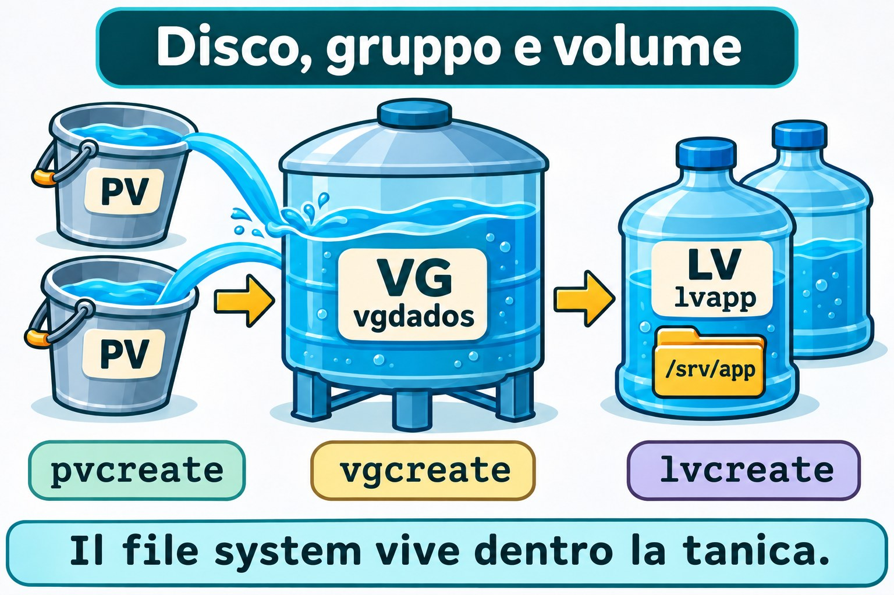
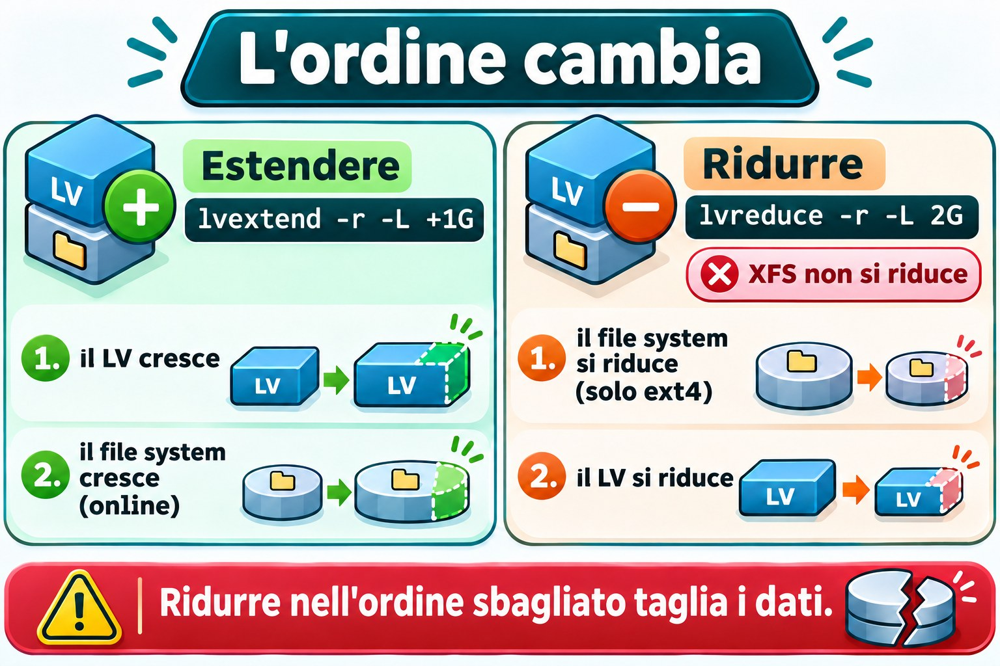
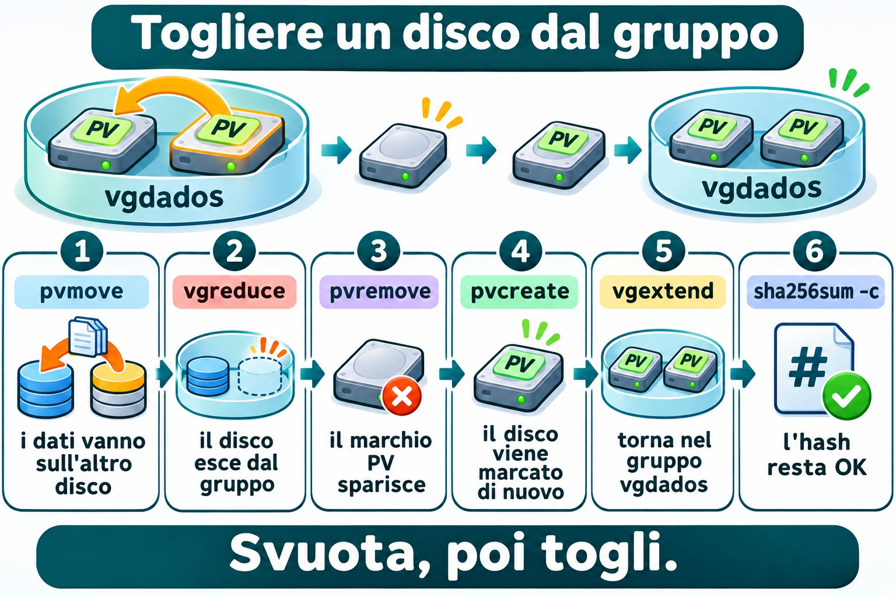

Lezione 9.6 · LVM
In Windows passi a "Spazi di archiviazione" o al disco dinamico quando un volume deve superare la dimensione di un disco. In Linux questo livello si chiama LVM, e l'installer lo usa già nelle tue due VM. In questa lezione monti un volume group da zero con due dischi nuovi, ingrandisci e riduci un volume senza perdere dati, e sposti un disco mentre il sistema è in funzione.
Il cuore di questa lezione: montare la catena PV, VG e LV (
pvcreate,vgcreate,lvcreate); leggere lo stato conpvs,vgselvs; estendere conlvextend -r; ridurre solo ext4, conlvreduce -r; e togliere un disco dal gruppo conpvmove,vgreduceepvremove. Il resto è approfondimento.
| Scheda | |
|---|---|
| Modulo | M9 · Storage, lezione 6 di 7 |
| Quando | Settimana 14 |
| Alla fine | Crei, estendi, riduci e sposti volumi logici, e sai quando LVM non aiuta |
| Prerequisiti | Lezioni 9.1, 9.4 e 9.5 |
| Durata | circa 2h30 |
| Snapshot | m9a6-inicio e m9a6-fim su rocky-lab e debian-lab |
1 · Riscaldamento
Rispondi prima di leggere.
- Nella 9.1 hai visto il layout del disco di sistema. Dov'era LVM al suo interno?
- Una partizione da 2 GiB è piena. Cosa devi fare perché diventi da 3 GiB?
- Perché
/dev/mapper/debian--lab--vg-rootha il trattino doppio nel nome?
2 · Perché conta
| La richiesta | La risposta sbagliata | Cosa provoca |
|---|---|---|
"/var si è riempito" | Cancellare log alla cieca | Risolve per una settimana e fai sparire le prove |
| "Mi serve più spazio nella cartella dei dati" | Creare un'altra cartella su un altro disco | Dati sparsi |
| "Cambiamo il disco vecchio" | Spegnere, copiare tutto, riaccendere | Finestra di fermo che pvmove evita |
| "Riduci questo volume XFS" | Provare lvreduce | Non funziona: XFS non si riduce |
"Ho ingrandito il volume, df non è cambiato" | Ingrandire di nuovo | Mancava l'ingrandimento del file system |
3 · Modello mentale
Pensa a delle cisterne d'acqua. Ogni disco che consegni a LVM è un secchio (PV). Versi tutti i secchi in una cisterna grande (VG): l'acqua diventa una cosa sola. Da lì prendi le damigiane (LV) della dimensione che ti serve. Damigiana piena? Prendi altra acqua dalla cisterna. Secchi nuovi? Versali nella cisterna. Secchio vecchio? Svuotalo dentro gli altri e toglilo. Il file system vive dentro la damigiana, e per questo va ingrandito insieme.
disco inteiro → PV (pvcreate) marca o disco para o LVM
um ou mais PVs → VG (vgcreate) a caixa: espaço em blocos de 4 MiB (PE)
fatias do VG → LV (lvcreate) o "disco" que você formata e monta
LV + mkfs → /dev/vgdados/lvapp → /srv/app
Nomes de um mesmo LV:
/dev/vgdados/lvapp = /dev/mapper/vgdados-lvapp (o hífen do VG ou do LV vira --)

Ponte Windows
| In Windows | In Linux | Dove il paragone inganna |
|---|---|---|
| Gestione disco, disco dinamico | PV | Linux marca tutto il disco, senza partizione |
| Pool di Spazi di archiviazione | VG | Il pool non ha spazio usato per impostazione predefinita: lo chiedi in volumi |
| Spazio di archiviazione (volume) | LV | Ogni LV ha un file system proprio |
Estendere il volume (diskpart extend) | lvextend -r | -r ingrandisce anche il file system |
| Ridurre il volume | lvreduce -r | Solo ext4: XFS non si riduce mai |
| Lettera di unità | Punto di montaggio | L'LV non riceve una lettera: lo monti dove vuoi |
4 · L'essenziale
Leggere lo stato
| Voglio vedere... | Riepilogo | Dettaglio |
|---|---|---|
| Dischi marcati | pvs | pvdisplay |
| Gruppi | vgs | vgdisplay |
| Volumi | lvs | lvdisplay |
lvs -o lv_name,vg_name,lv_attr,lv_size,devices mostra su quali dischi si trova ogni volume. Le dimensioni con g minuscola sono in GiB. Anche Proxmox usa GiB: il disco da 3 di qm set è da 3 GiB.
Creare la catena
sudo pvcreate DISCO # marca il disco come PV
sudo vgcreate vgdados DISCO... # crea il VG con uno o più PV
sudo lvcreate -n lvapp -L 2G vgdados
sudo mkfs.ext4 -L APP /dev/vgdados/lvapp-n dà il nome dell'LV e -L la dimensione (2G = 2 GiB). Con -l 100%FREE, l'LV prende tutto lo spazio libero. DISCO è sempre un percorso di /dev/disk/by-id/, come hai imparato a controllare nella 9.1.
Estendere: prima il disco, poi il file system
sudo lvextend -r -L +1G /dev/vgdados/lvapp+1G somma 1 GiB alla dimensione attuale. -L 3G, senza il segno, sarebbe la dimensione finale. L'opzione -r (--resizefs) chiama fsadm, che esegue resize2fs su ext4 e xfs_growfs su XFS. Estendere funziona con il volume montato e in uso.
Ridurre: prima il file system, poi il disco
sudo lvreduce -r -L 2G /dev/vgdados/lvappQui l'ordine si inverte: se il volume si restringe prima del file system, la fine di quest'ultimo viene tagliata, e i dati se ne vanno con essa. Con -r, LVM fa tutto nell'ordine giusto: smonta, controlla (e2fsck), riduce ext4 e solo dopo l'LV. XFS non si riduce. Per ridurre un XFS, copi i dati all'esterno, ricrei l'LV più piccolo e ripristini. Fai un backup prima di qualsiasi lvreduce.


Spostare i dati e togliere un disco
| Passo | Comando | Cosa fa |
|---|---|---|
| 1 | pvmove PV | Copia tutti gli extent del PV sugli altri PV del VG, con tutto montato |
| 2 | vgreduce VG PV | Toglie il PV vuoto dal gruppo |
| 3 | pvremove PV | Cancella il marchio di PV dal disco |
pvmove ha bisogno di spazio libero sugli altri PV. Se viene interrotto, pvmove --abort annulla, e pvmove, senza argomenti, riprende. Per restituire il disco: pvcreate e vgextend VG PV.


Rocky × Debian
| Rocky | Debian | |
|---|---|---|
| VG di sistema | rl | debian-lab-vg |
| Pacchetto | lvm2 (già installato) | lvm2 (già installato, dall'installer guidato) |
| File dei dispositivi | /etc/lvm/devices/system.devices, in uso | Controlla: spesso disattivato o senza il file |
| Verificare | sudo lvmdevices | sudo lvmconfig --typeconfig full devices/use_devicesfile |
File system di lvapp | ext4, per scelta della lezione | ext4 |
Su Rocky 9, un PV che non è nel file dei dispositivi resta invisibile a LVM. pvcreate e vgcreate aggiungono il disco al file da soli. Il problema compare quando sposti un disco da un'altra macchina: usa sudo lvmdevices --adddev DISCO. Su Debian, controlla: con 0, o senza il file system.devices, LVM guarda tutti i dischi.
Non toccare mai i VG rl e debian-lab-vg: lì ci sono / e lo swap delle VM.
5 · Lab guidato
Passo 0 · Snapshot, backup e dischi. In Proxmox, fai lo snapshot prima di aggiungere i dischi: qm snapshot 201 m9a6-inicio e qm snapshot 202 m9a6-inicio. Se torni indietro con qm rollback, i dischi nuovi escono dalla configurazione e diventano unused: non vengono cancellati, ma vanno ricollegati. Il backup su PBS della 9.1 esiste: lo snapshot non è un backup. Aggiungi i due dischi:
qm set 201 --scsi2 vm-hdd:3,discard=on,iothread=1,ssd=1
qm set 201 --scsi3 vm-hdd:3,discard=on,iothread=1,ssd=1
qm set 202 --scsi2 vm-hdd:3,discard=on,iothread=1,ssd=1
qm set 202 --scsi3 vm-hdd:3,discard=on,iothread=1,ssd=1Su rocky-lab, identifica i dischi dal nome stabile, e non da sdc o sdd:
lsblk -o NAME,SIZE,TYPE,MOUNTPOINTS
ls -l /dev/disk/by-id/ | grep -E 'drive-scsi[23] '
D2=/dev/disk/by-id/scsi-0QEMU_QEMU_HARDDISK_drive-scsi2
D3=/dev/disk/by-id/scsi-0QEMU_QEMU_HARDDISK_drive-scsi3
sudo wipefs $D2 $D3Le variabili D2 e D3 esistono solo in questo terminale: se ne apri un altro, definiscile di nuovo. wipefs senza opzioni elenca soltanto le firme, e non scrive nulla. Se non compare niente, i dischi sono vergini. Lo scsi1 da 4 GB (il disco della 2.2, ampliato nella 9.1) ha un'altra dimensione ed è quello delle lezioni da 9.2 a 9.5 e della 9.7: non toccarlo. Controlla i pacchetti: rpm -q lvm2 (Rocky) e dpkg -s lvm2 | head -n 2 (Debian).
Passo 1 · PV.
sudo pvcreate $D2 $D3
sudo pvs
sudo lvmdevicesOutput atteso di pvs (i nomi sdc e sdd possono variare):
PV VG Fmt Attr PSize PFree
/dev/sda3 rl lvm2 a-- <18.80g 0
/dev/sdc lvm2 --- 3.00g 3.00g
/dev/sdd lvm2 --- 3.00g 3.00glvmdevices elenca il file dei dispositivi, e ora i due dischi nuovi ci sono. Su Debian, controlla use_devicesfile e prosegui.
Passo 2 · Il VG.
sudo vgcreate vgdados $D2 $D3
sudo vgs VG #PV #LV #SN Attr VSize VFree
rl 1 2 0 wz--n- <18.80g 0
vgdados 2 0 0 wz--n- 5.99g 5.99gI 6 GiB diventano 5,99 GiB: ogni PV conserva dei metadati.
Passo 3 · L'LV, ext4 e fstab.
sudo lvcreate -n lvapp -L 2G vgdados
sudo mkfs.ext4 -L APP /dev/vgdados/lvapp
sudo mkdir -p /srv/app
sudo cp -a /etc/fstab /etc/fstab.bak
echo "UUID=$(sudo blkid -s UUID -o value /dev/vgdados/lvapp) /srv/app ext4 defaults,nofail 0 2" | sudo tee -a /etc/fstab
sudo systemctl daemon-reload
sudo mount -a
sudo findmnt --verify
findmnt /srv/app
lvs -o lv_name,vg_name,lv_attr,lv_size,devices vgdadosblkid -s UUID -o value stampa solo l'UUID, e tee -a aggiunge la riga in fondo al file. Usa l'UUID del file system (di blkid), e non quello dell'LV. Output atteso di lvs:
LV VG Attr LSize Devices
lvapp vgdados -wi-ao---- 2.00g /dev/sdc(0)La o in Attr indica volume aperto (montato).
Passo 4 · Dati di prova.
sudo dd if=/dev/urandom of=/srv/app/prova.bin bs=1M count=200 status=none
sudo sha256sum /srv/app/prova.bin | tee ~/prova.sha256Controllerai questo hash più avanti.
Passo 5 · Estendere.
sudo lvextend -r -L +1G /dev/vgdados/lvapp
df -h /srv/app
lvs -o lv_name,lv_size,devices vgdadosdf mostra circa 2,9 GiB: ext4 è cresciuto insieme, con il volume montato. Dato che il primo disco ha poco meno di 3 GiB, devices può mostrarli entrambi: /dev/sdc(0),/dev/sdd(0).
Passo 6 · Ridurre.
sudo lvreduce -r -L 2G /dev/vgdados/lvappSe il comando chiede conferma (per ridurre o per smontare), leggi e rispondi y. Il messaggio cambia secondo la versione di lvm2. Smonta, esegue e2fsck, riduce ext4, poi l'LV, e rimonta. Controlla:
df -h /srv/app
sha256sum -c ~/prova.sha256Atteso: /srv/app/prova.bin: OK.
Passo 7 · LV di prova.
sudo lvcreate -n lvteste -L 500M vgdados
lvs vgdados
sudo lvremove vgdados/lvtestelvremove chiede conferma e cancella l'LV e i suoi dati. Se ci fosse un mount, smonta prima e togli la riga da fstab.
Passo 8 · Togliere il disco che contiene lvapp. Guarda dov'è il volume:
lvs -o lv_name,devices vgdados
pvs -o pv_name,pv_size,pv_usedSe lvapp è su sdc (lo scsi2), sposta quel PV. Se è sull'altro, sostituisci $D2 con $D3 nei comandi qui sotto.
sudo pvmove $D2
lvs -o lv_name,devices vgdados
sudo vgreduce vgdados $D2
sudo pvremove $D2
sudo pvs
sha256sum -c ~/prova.sha256pvmove mostra l'avanzamento (Moved: 100.00%), con /srv/app montato e in uso. Dopo, lvapp è solo sull'altro disco, e il disco liberato esce dal VG e smette di essere PV. Restituiscilo al gruppo, come si aspetta la 9.7:
sudo pvcreate $D2
sudo vgextend vgdados $D2
sudo vgsPasso 9 · debian-lab. Ripeti i passi da 0 a 8 su debian-lab. I dischi, il VG e l'LV hanno gli stessi nomi. Nel Passo 1, al posto di lvmdevices, lancia sudo lvmconfig --typeconfig full devices/use_devicesfile.
Decidi 1
Un volume XFS da 10 GiB usa solo 2 GiB, e devi liberare spazio nel VG. Cosa fai?
A) lvreduce -r -L 4G. B) Fare un backup, creare un LV più piccolo, formattare e ripristinare. C) xfs_growfs con una dimensione minore.
Scegli un'opzione prima di continuare.
| Se hai scelto | Risultato | Perché |
|---|---|---|
| A | Fallisce | XFS non si riduce, e -r non cambia questo |
| B | Giusto | È l'unica strada per ridurre un XFS |
| C | Fallisce | xfs_growfs può solo ingrandire |
Da ricordare: ingrandire è facile e online. Ridurre vale solo su ext4.
Decidi 2
Uno dei due dischi del VG verrà sostituito, e contiene dati. Qual è la sequenza?
A) vgreduce diretto. B) pvmove, vgreduce e pvremove. C) pvremove -ff e ripristino dal backup.
Scegli un'opzione prima di continuare.
| Se hai scelto | Risultato | Perché |
|---|---|---|
| A | Rifiuta | Il PV ha ancora extent in uso |
| B | Giusto | Svuota, toglie dal gruppo e solo dopo cancella il marchio |
| C | Perdi i dati | -ff ignora la protezione |
Da ricordare: svuota, poi togli.
6 · Rompi e ripara
Guasto 1 · Il volume è cresciuto e df no
sudo lvextend -L +512M /dev/vgdados/lvapp
df -h /srv/app
lvs -o lv_name,lv_size vgdadosSintomo: lvs mostra 2,50 GiB, e df resta a 2 GiB.
Indagine: confronta i due output. Il volume è più grande del file system al suo interno. Mancava -r.
Causa: lvextend senza -r tocca solo l'LV.
Riparazione: sudo resize2fs /dev/vgdados/lvapp. Su XFS, sarebbe sudo xfs_growfs /srv/app. df ora mostra 2,5 GiB.
Guasto 2 · Il VG non ha spazio
sudo lvcreate -n lvgrande -L 8G vgdadosSintomo: Volume group "vgdados" has insufficient free space, e il comando dice quanti extent mancano.
Indagine: sudo vgs e, se vuoi, sudo vgdisplay vgdados. Guarda VFree.
Causa: il gruppo ha circa 6 GiB in totale, e l'LV esistente ne occupa una parte.
Riparazione: chiedere meno, come -l 100%FREE, oppure far crescere il gruppo con un altro disco (pvcreate e vgextend). L'LV non è stato creato: non c'è nulla da pulire.
Guasto 3 · Il volume che non è attivo
sudo umount /srv/app
sudo lvchange -an vgdados/lvapp
sudo mount /srv/appSintomo: mount termina in silenzio, perché la riga ha nofail (come nella 9.4). Ma findmnt /srv/app non mostra nulla, e ls /srv/app mostra la cartella vuota della root.
Indagine: lvs -o lv_name,lv_attr vgdados mostra Attr senza la a (-wi-------). ls /dev/vgdados/ è senza lvapp. Il volume esiste, ma è disattivato.
Causa: senza un LV attivo, l'UUID del file system non compare in /dev/disk/by-uuid/. Succede, per esempio, dopo aver importato un VG da un'altra macchina.
Riparazione: sudo lvchange -ay vgdados/lvapp e sudo mount /srv/app.
Pulizia
sudo lvreduce -r -L 2G /dev/vgdados/lvapp
sudo rm /srv/app/prova.bin ~/prova.sha256
sudo vgs
findmnt /srv/applvapp torna a 2 GiB, montato e vuoto, e vgdados resta con scsi2 e scsi3. La 9.7 parte da lì.
7 · Trappole
| Trappola | Cosa succede | Come evitarla |
|---|---|---|
lvextend senza -r | L'LV cresce e il file system no | Sempre -r |
lvreduce senza -r | Taglia la fine del file system, e i dati se ne vanno | Sempre -r, e con backup |
| Provare a ridurre XFS | Errore, o perdita se si sceglie la strada sbagliata | Backup, ricreare, ripristinare |
pvcreate sul disco sbagliato | Cancella ciò che c'era | Controlla con by-id, lsblk e wipefs senza -a |
pvremove -ff | Ignora le protezioni | Usalo solo dopo pvmove e vgreduce |
Togliere un PV senza pvmove | Perdi gli extent che c'erano sopra | Svuota prima |
| PV invisibile su Rocky | Manca nel file dei dispositivi | lvmdevices --adddev |
8 · Quiz
Rispondi senza guardare. Le soluzioni sono alla fine della lezione.
- Qual è l'ordine dei livelli di LVM, dal disco al punto di montaggio?
- Cosa fa
-rinlvextende inlvreduce? - Perché XFS non può essere ridotto?
- Qual è la sequenza per togliere un disco da un VG con dati?
- Perché in fstab si usa l'UUID di
blkid, e non quello dell'LV? - Cosa indica una colonna
Attrconainlvs?
9 · Promemoria
Da sapere a memoria:
| Voglio... | Comando |
|---|---|
| Riepilogo | pvs, vgs, lvs |
| Marcare un disco | sudo pvcreate DISCO |
| Creare un gruppo | sudo vgcreate vgdados DISCO... |
| Creare un volume | sudo lvcreate -n NOME -L 2G VG |
| Estendere | sudo lvextend -r -L +1G /dev/VG/LV |
| Ridurre (ext4) | sudo lvreduce -r -L 2G /dev/VG/LV |
| Svuotare un disco | sudo pvmove DISCO |
Da consultare:
| Voglio... | Comando |
|---|---|
| Dov'è ogni LV | lvs -o lv_name,devices VG |
| Togliere dal gruppo | sudo vgreduce VG DISCO |
| Cancellare il marchio | sudo pvremove DISCO |
| Restituire al gruppo | sudo vgextend VG DISCO |
| Attivare o disattivare | sudo lvchange -ay VG/LV, -an |
| File dei dispositivi (Rocky) | sudo lvmdevices, sudo lvmdevices --adddev DISCO |
Flashcard:
- PV → il disco marcato.
- VG → la cisterna di spazio.
- LV → la damigiana che formatti.
- Estendere → LV, poi file system.
- Ridurre → file system, poi LV.
- XFS → cresce, non si riduce.
10 · Checklist e chiusura
- [ ] Identifico i dischi nuovi tramite
by-idprima di scrivere - [ ] Monto PV, VG e LV e leggo
pvs,vgselvs - [ ] Estendo con
-re controllo condf - [ ] Riduco un ext4 in sicurezza, e so che XFS non si riduce
- [ ] Sposto dati con
pvmovee tolgo un disco dal gruppo - [ ] Lascio
vgdadosconscsi2escsi3, elvappmontato in/srv/app
Ultimo esercizio, senza guardare la lezione: su debian-lab, crea un LV lvteste da 300 MiB in XFS (installa xfsprogs), montalo in /mnt/teste, estendilo e spiega perché non si riduce. Poi rimuovilo.
Snapshot di fine (in Proxmox):
qm snapshot 201 m9a6-fim
qm snapshot 202 m9a6-fim11 · Nella vita reale
Missione, sola lettura. Su un server Linux che amministri (o con autorizzazione), lancia solo:
sudo pvs
sudo vgs -o vg_name,vg_size,vg_free
sudo lvs -o lv_name,vg_name,lv_size,lv_attr,devices
lsblk -f
findmnt -no TARGET,SOURCE,FSTYPE -t ext4,xfsDomande a cui rispondere:
- Quali VG esistono, e quanto spazio libero ha ciascuno?
- Qualche LV è vicino a riempirsi, mentre il VG ha spazio in abbondanza?
- I volumi importanti sono in XFS o ext4? Cosa dice questo sul ridurre?
12 · Approfondire quando vuoi
man lvm,man lvextend,man lvreduce,man pvmove: le opzioni complete.- Documentazione Red Hat: "Configuring and managing logical volumes", nel portale della documentazione di RHEL 9.
- kernel.org: documentazione del device-mapper.
DeepTutor (http://10.1.0.149:3782, KB "Curso Linux Sysadmin"):
!explica PV, VG e LV com uma metáfora!feynman por que reduzir um volume exige encolher o sistema de arquivos antes!quiz Aula 9.6, 5 perguntas sobre LVM
Soluzioni commentate
Riscaldamento
- Il disco di sistema ha una partizione come PV del gruppo
rl(Rocky) odebian-lab-vg(Debian). I volumirooteswapescono da lì. - Ingrandire il volume e poi il file system. Su una partizione normale serve spazio libero accanto ad essa. Con LVM,
lvextend -rrisolve. - Il trattino separa il nome del gruppo dal nome del volume. Per questo il trattino già presente nel nome diventa
--.
Quiz
- Disco, PV, VG, LV, file system e punto di montaggio.
- Regola anche il file system: lo ingrandisce con
lvextend, lo riduce conlvreduce, nell'ordine giusto. - Perché XFS non ha un'operazione di riduzione: può solo crescere.
pvmove,vgreduceepvremove.- L'LV è solo un dispositivo, e l'UUID che usa fstab appartiene al file system al suo interno.
- Che il volume è attivo.